Miejscem zerowym funkcji liniowej \(f\) jest liczba 2, a punkt przecięcia wykresu funkcji \(f\) z osią Oy ma współrzędne (0, 4).
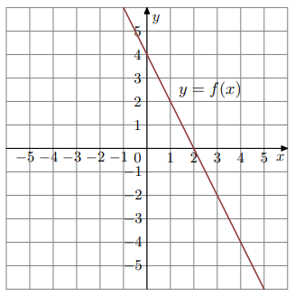Oceń prawdziwość poniższych stwierdzeń:
Współczynnik kierunkowy prostej \(f\) jest równy \(-2\).
Pole trójkąta ograniczonego osiami i wykresem funkcji \(f\) wynosi 8.
Funkcja liniowa \(f(x)=ax+b\). Fragment wykresu na rysunku:
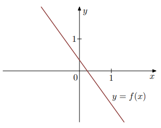Liczby \(a\) i \(b\) spełniają warunki:
Dana funkcja liniowa \(f(x)=ax+b\). Wykres przedstawiono poniżej:
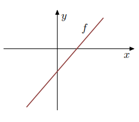Współczynniki \(a, b\) spełniają warunki:
Na rysunku jest przedstawiona graficzna ilustracja układu dwóch równań stopnia pierwszego z dwiema niewiadomymi \(x\) i \(y\):
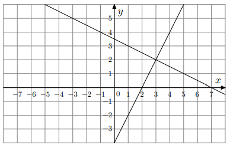Wskaż ten układ.
Prosta \(l\) jest nachylona do osi \(Ox\) pod kątem \(30^\circ\) i przecina oś \(Oy\) w punkcie \((0,-\sqrt{3})\).
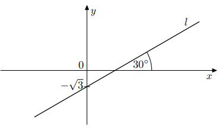Równanie prostej \(l\) to:
Na rysunku przedstawiony jest fragment wykresu funkcji liniowej \(f\), przy czym \(f(0)=-2\) i \(f(1)=0\).
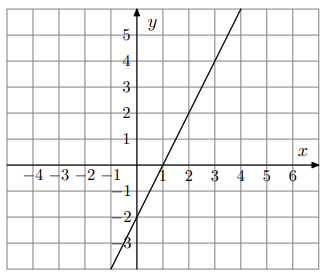Wykres funkcji \(g\) jest symetryczny do wykresu funkcji \(f\) względem początku układu współrzędnych. Wzór funkcji \(g\) to:
Na rysunku przedstawione są dwie proste równoległe \(k\) i \(l\) o równaniach \(y=ax+b\) oraz \(y=mx+n\). Początek układu współrzędnych leży między tymi prostymi.
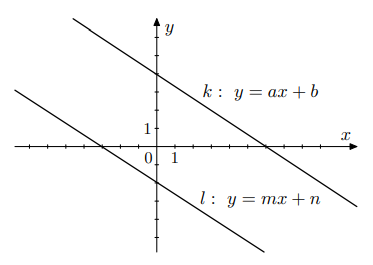Zatem:
Na jednym z poniższych rysunków przedstawiono interpretację geometryczną układu równań:
\(\begin{cases} x+3y=-5 \\ 3x-2y=-4 \end{cases}\)
Współczynnik kierunkowy prostej, na której leżą punkty \(A=(-4,3)\) oraz \(B=(8,7)\), jest równy:
Na rysunku przedstawiony jest fragment prostej o równaniu \(y=ax+b\), przechodzącej przez punkty \((0,-2)\) i \((6,2)\).
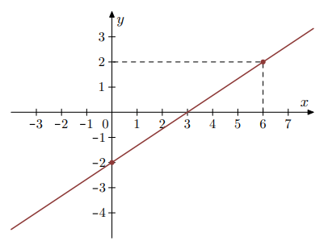Wtedy:
Układ równań:
\(\begin{cases} x-y=3 \\ 2x+0.5y=4 \end{cases}\)
opisuje w układzie współrzędnych na płaszczyźnie:
Na rysunku przedstawiono geometryczną interpretację jednego z niżej zapisanych układów równań.
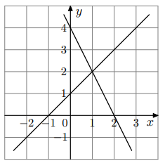Wskaż równanie prostej, której fragment przedstawiony jest na poniższym wykresie:
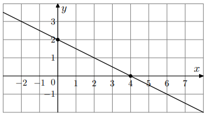Na rysunku przedstawiony jest fragment wykresu pewnej funkcji liniowej \(y=ax+b\).
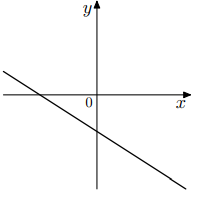Jakie znaki mają współczynniki \(a\) i \(b\)?
Na którym rysunku przedstawiono wykres funkcji liniowej \(y=ax+b\) takiej, że \(a>0\) i \(b<0\)?
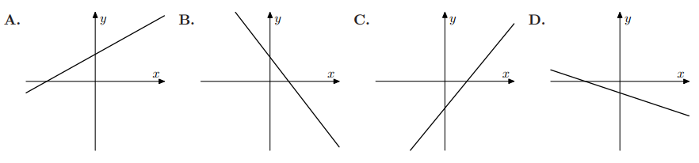